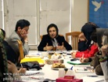

|
|

آموزش حقوق زن برای اعضای کمپین یک ميليون امضا
شنبه6 بهمن 1386
روز پنجشنبه سوم بهمن ماه اولین جلسه حقوق زن با حضور شیرین عبادی و دکتر سلطانی در جلسه کانون مدافعان حقوق بشر برگزار شد. در این جلسه که توسظ کمیته حقوق زن کانون مدافعان حقوق بشر و با هماهنگی کمیته پی گیری و کمیته رسانه کمپین یک میلیون امضا برگزار شد، اولین گروه داوطلبان شرکت در جلسات حقوق زن که حدود 30 نفر از اعضای کمپین یک میلون امضا بوده و پیش تر نیز درکارگاه های آموزشی کمپین شرکت کرده بودند حضور داشتند. در جلسه نخست، کتاب حقوق زن نوشته شیرین عبادی از سوی کمیته حقوق زن و به رایگان به شرکت کنندگان کارگاه ارائه شد ودرباره موارد و مشکلات حقوقی ای که اعضای کمپین هنگام جمع آوری امضا با آن برخورد می کنند صحبت شد. این جلسات در آینده با جلسات حقوقی وهمچنین حقوق متهمین ادامه خواهد یافت.